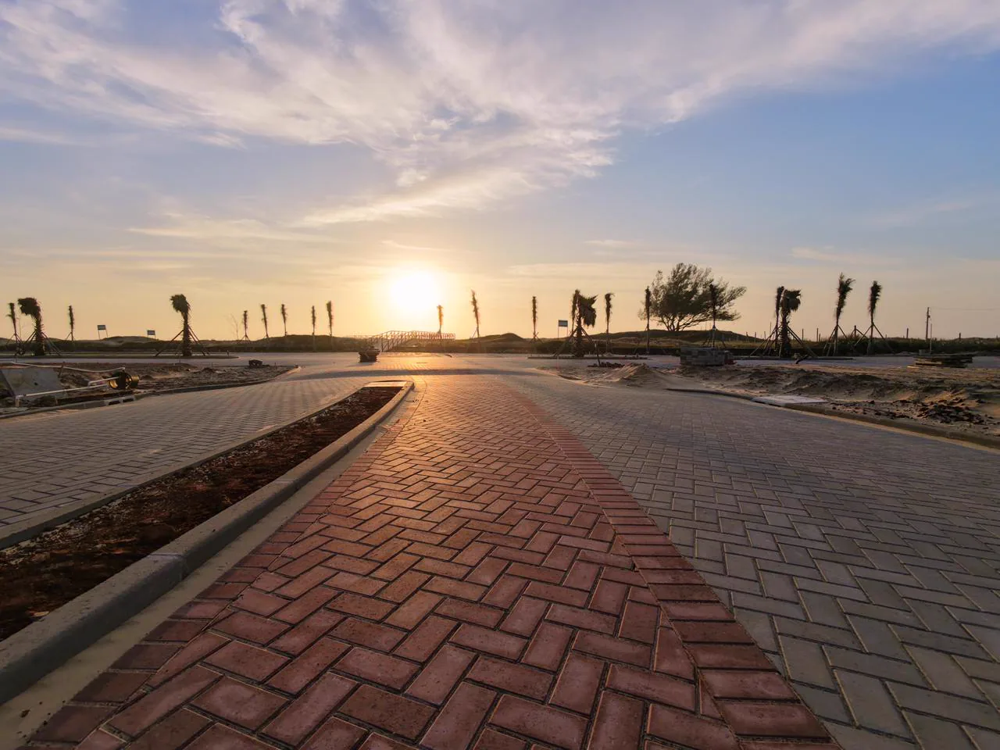

01 / PrepararBase
Terraplenagem
Movimentação de solo e conformação da área para receber as etapas seguintes da urbanização.
 Registro de campo / Portofino
Registro de campo / PortofinoNossa atuação
Solo, redes, vias e urbanismo. Cada frente dá suporte à próxima e faz o projeto avançar.
Percorra as etapas Portofino / Passo de Torres, SC
Portofino / Passo de Torres, SCDo terreno às redes · das vias ao lugar
Engenharia & urbanizaçãoMovimentação de solo e conformação da área para receber as etapas seguintes da urbanização.
Registro de campo / PortofinoImplantação de redes de água e esgoto e soluções para conduzir as águas pluviais, conforme as necessidades do projeto.
 Registro de campo / Portofino
Registro de campo / PortofinoExecução das vias e pisos que organizam os deslocamentos e conectam os espaços do empreendimento.

Registro de campo / PortofinoVias, espaços externos e paisagem passam a funcionar como um conjunto, dando forma ao lugar.
 Registro de campo / Portofino
Registro de campo / Portofino
Da técnica ao território
O Portofino reúne fotografias e vídeos das frentes de infraestrutura registradas em 2025.
Conheça o PortofinoFotografias do acervo Portofino, captadas em 2025. Elas não representam necessariamente o estágio atual da obra.
Vamos conversar
Converse com a equipe sobre as necessidades da sua área.
Fale com a Monlote